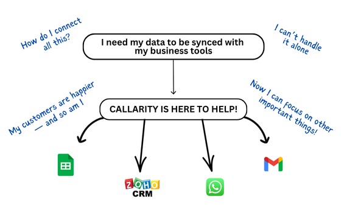

How Callarity uses AI Voice Technology to power real, human-like conversations
which can be easily automated
Callarity combines STT, NLP, and TTS to build voice agents that sound truly human. Our AI listens, understands, and responds naturally — automating thousands of customer calls daily with real-time context and multilingual fluency.
How our Call Flow Works
Callarity AI instantly converts customer speech into text, maintaining accuracy even in regional and code-mixed languages.
It understands intent, emotion, and context — deciding how to respond just like a real conversation.
Our natural multilingual voices speak back within milliseconds, ensuring the flow feels human and uninterrupted.
Every interaction can trigger follow-ups in CRMs, WhatsApp, or Google Sheets — syncing leads, responses, and updates automatically.

Why this Technology Flow Matters for Your Business